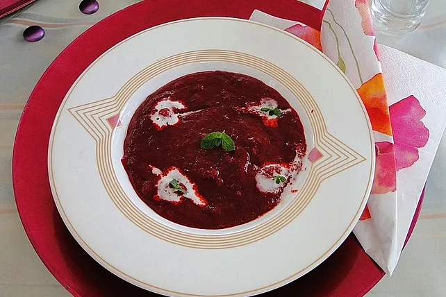

Rote Wintersuppe

etwas Butter
½ Zwiebel(n), klein gewürfelt
¼ Stück(e) Ingwer, geschält, fein gehackt, fingerdicke Scheibe oder mehr
¼ Apfel, fest, säuerlich, geschält, grob gewürfelt
¼ Schuss Weißwein, trocken, fruchtig, oder Apfelwein, nicht süß
¼ Liter Gemüsebrühe
½ Rote Bete, geschält, gewürfelt
½ Kartoffel(n), klein, geschält, gewürfelt
Salz und Pfeffer
¼ Spritzer Worcestershiresauce
1 TL Schmand
Kräuter, frisch
Zubereitung:
Die Zwiebeln in Butter anschwitzen. Ingwer- und Apfelwürfel zugeben, kurz mitschwitzen und mit dem Wein ablöschen. Die Brühe zugießen und zum Kochen bringen. Rote Bete und Kartoffeln zugeben, aufkochen, die Hitze reduzieren, zudecken und ca. 15-20 Minuten köcheln lassen. Pürieren, abschmecken und zum Kochen bringen. Den Schmand zugeben, garnieren und genießen. Tipp: Rote Bete kann vorgegart (dann aber noch fest) oder frische Knolle sein. Die besten Erfahrungen habe ich mit selbst halbgar gekochter Roter Bete gemacht, dann ist das Schälen und Schneiden sauberer. Kartoffeln sorgen für die Konsistenz und auch dafür, dass die Farbe nicht so stechend blutig wirkt.
Rezept erstellt von
 Pascal
Pascal